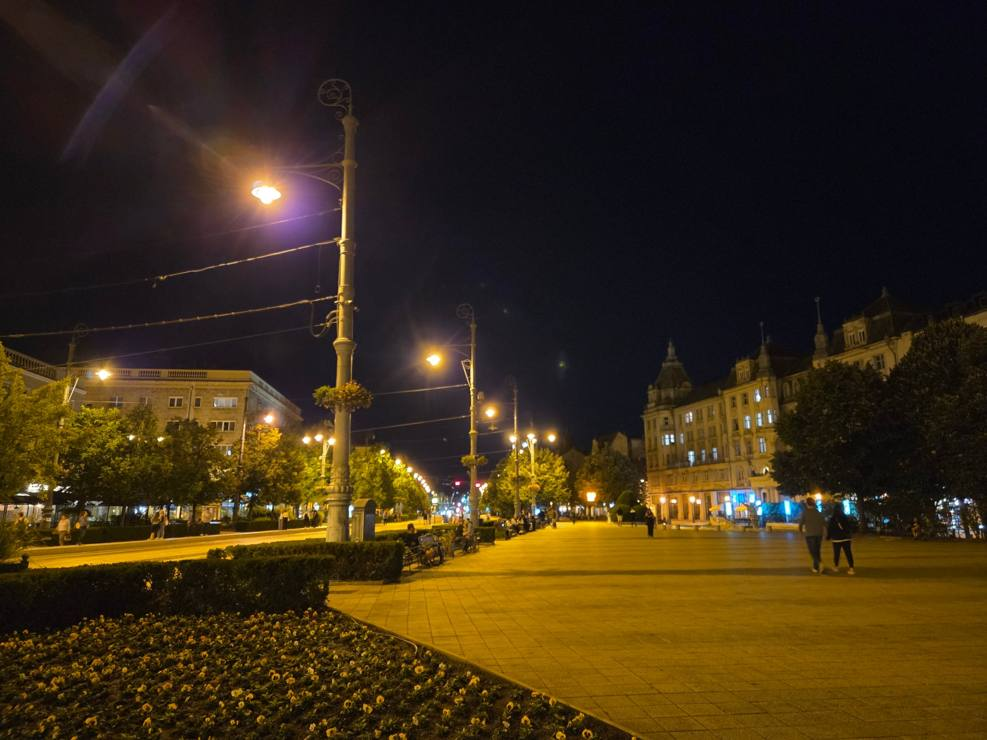
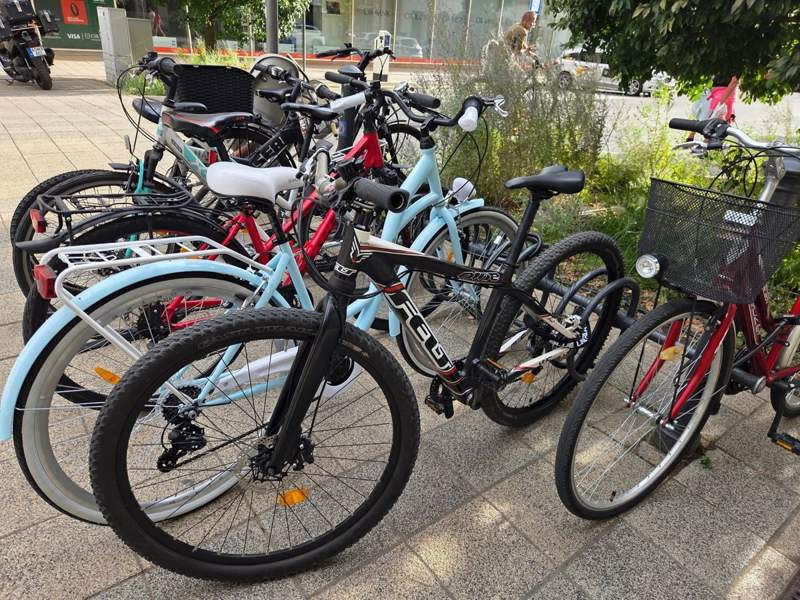
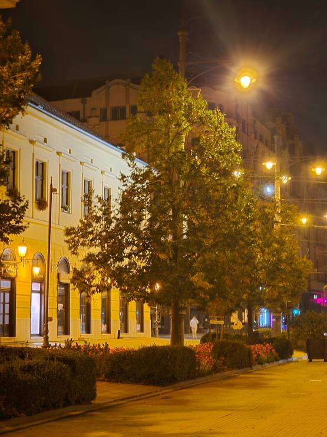
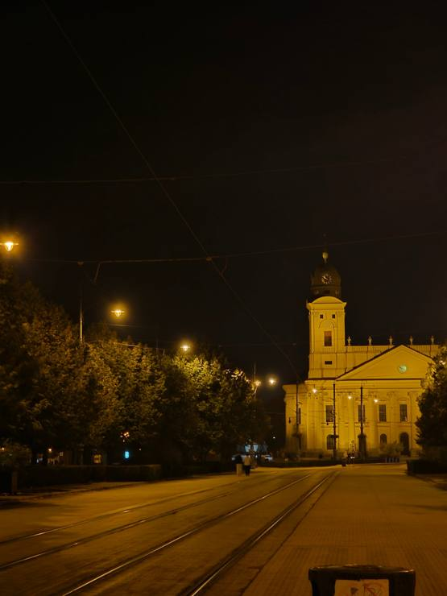

ハンガリー・デブレツェンの治安は実際どう？自転車盗難の失敗談とリアルな防犯対策【デブレツェン大学CS専攻】
みなさんこんにちは、ハンガリー留学ラボのユウゴです！
海外留学を検討する際、ご本人にとっても保護者の方にとっても一番大きな心配事が「現地の治安・安全性」ですよね。
「夜道は一人で歩けるの？」 「スリや置き引きなどの犯罪は多い？」 「海外で一人暮らしをしていて危険を感じることはある？」
今回は、僕が実際にハンガリーのデブレツェンで暮らしていて感じるリアルな治安の良さと、実際にやらかしてしまった自転車盗難の失敗談、そして普段から意識している防犯対策をお伝えします！
1. デブレツェンの治安はかなり良い！夜道のリアル

結論から言うと、デブレツェンの治安は海外の都市としてはかなり良い方だと思います！
街中でホームレスの人を見かけることはありますが、そこまで数が多くて危険を感じるということはありません。
夜の出歩きに関しても、大通り（主要なトラム沿いや中心街）であれば深夜0時頃でも人通りや街灯があり、僕は歩きやすいと感じます。
ただし、注意したいのは「人気のない裏路地」や「街灯が少ない小さな小道」です。昼間は静かな道でも、夜になると個人的にも結構不気味で怖い雰囲気を感じます。夜遅い時間にわざわざそういった暗い路地に入るのは避け、遠回りしてでも必ず明かりと人気のある大通りを歩くように徹底しています。
2. スリ・置き引き事情と、僕がやらかした「自転車盗難」の実話

留学生の間でスリや無理やり荷物をひったくられるような凶悪事件、酔っ払いに激しく絡まれたという話は聞いたことがありません。 僕自身もそういった被害に遭ったことは一度もありません。
ですが……実は僕、慢心が原因で「自転車の盗難」に遭ったことがあります！（苦笑）
アパートの敷地内に自転車を停めていたのですが、1学期の間ずっと盗まれることがなかったので完全に気を抜いてしまい、鍵（ロック）をかけずに放置していたんです。
すると、テスト期間が終わり「さあ今日から日本へ一時帰国だ！」という帰国当日の朝、自転車が無くなっていることが発覚しました。
敷地内だから大丈夫だろうという完全に僕の不注意と慢心でした。ハンガリーでも「鍵をかけずに放置された自転車」は当然ターゲットになってしまいます。この一件で「いくら治安が良い街でも、油断は禁物だな」と心から痛感しました。
3. 海外生活で意識したい防犯ルール

街の人々がみんな僕たちの荷物を狙っているわけではないので、必要以上に神経質になってビクビク暮らす必要はありません。
ですが、日本の感覚のまま過ごしていると隙ができてしまいます。僕が普段から意識しているのは、次の基本的な対策です。
カフェや図書館で席を立つ時、テーブルに荷物やスマホを置き去りにしない
スマホや財布をズボンの後ろポケットなど「取りやすい場所」に入れない
自転車は「ほんの5分」の買い物でも、必ず頑丈な鍵をかける
夜遅い時間は、一人で暗い裏路地に入らない
当たり前のことばかりですが、海外での被害の多くは「うっかり隙を見せてしまった瞬間」に起こります。
4. 最後に：不安を感じている読者・親御さんへ

「海外＝危険」というイメージを持たれがちですが、僕自身は、自転車の盗難を経験して、日頃の行動を見直すきっかけになりました。
鍵をかけずに自転車を放置したり、荷物を置いたまま席を離れたり、ポケットから財布が見える状態で歩いていたり、深夜に怪しい路地へ入っていったり……。
僕はこうした行動を避けながら、デブレツェンでの留学生活を楽しんでいます。
日本の治安の良さに感謝しつつ、最低限の節度と防犯意識を持って、安心してハンガリーへ飛び込んできてくださいね！